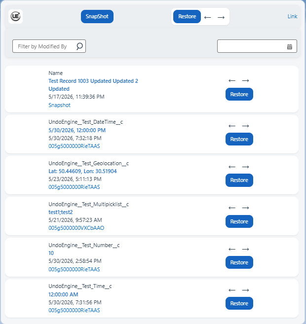
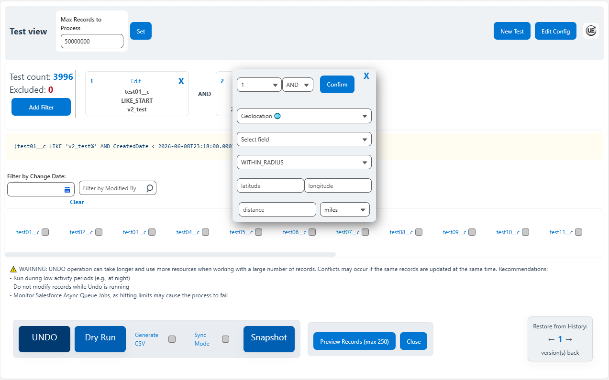
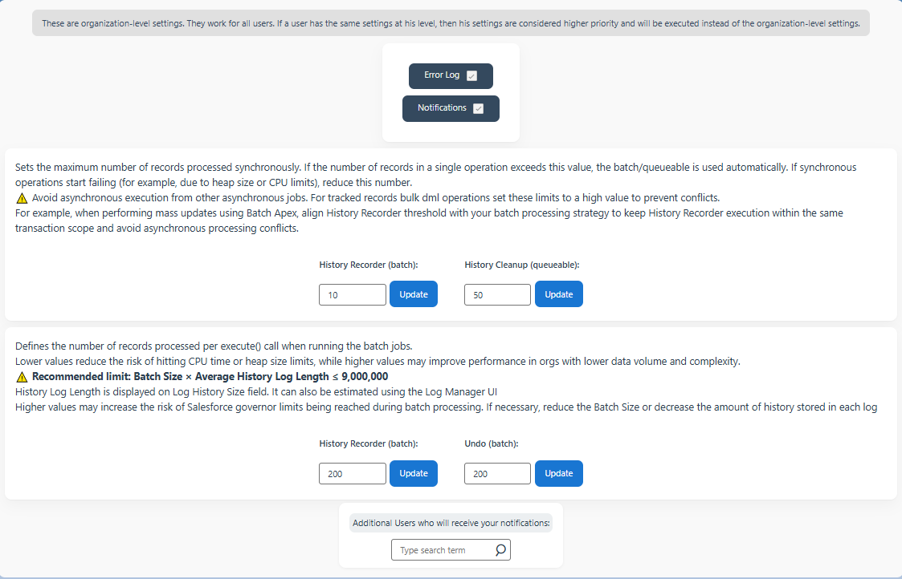

A storage-efficient, Flow-first tool for Salesforce that safely rolls back data changes — from individual fields to massive record sets containing millions of records — without object explosion or developer overhead.
Unlike record-per-change trackers, we store the entire history of a record in a single compact JSON structure — dramatically reducing storage usage and allowing the system to scale safely to millions of updates.
Admins can enable UndoEngine for any standard or custom object in less then 1.5 minute using generic Flow templates — no Apex required.
Track changes, preview them in a timeline, filter history, and undo updates for any editable fields on any object.
Configure everything from the UI — history length, number of tracked fields, async mode, batch sizes, and more.
Unlike standard Salesforce List Views, this feature emulates List View behavior, bypassing platform limits. Includes a powerful SOQL-based engine and an exclusive Geolocation filter with special operators.
UndoEngine prioritizes user experience with contextual tooltips and help texts throughout the interface. Data is displayed according to each user’s Salesforce locale, respecting date/time formats and time zones. Hover over values to see the exact UTC format stored in JSON — ensuring clarity for users and transparency for admins.
UndoEngine is designed to operate safely at enterprise scale. Asynchronous processing, configurable batch sizes and optimized history storage ensure reliable performance even with millions of record updates. The architecture respects Salesforce governor limits while providing powerful recovery and auditing capabilities for administrators.
UndoEngine comes with comprehensive built-in documentation right inside the package. All features, settings, and instructions are well-structured and easily accessible via a dedicated left-hand tab, making it simple for users and administrators to get started without needing external resources.



| Capability | Field History | Typical AppExchange Tools | UndoEngine |
|---|---|---|---|
| True Data Rollback | ❌ | Partial | ✔ Full rollback |
| Record Restore | ❌ | Partial / Limited | ✔ Yes |
| Storage Efficiency | Low | Low | ✔ Compact JSON history |
| Field-Level Recovery | ❌ | Limited | ✔ Yes |
| Flow-first Configuration | ❌ | Apex development required | ✔ Ready-to-use Flow powered by Invocable Apex Action |
| Timezone Correctness | Basic | Often Broken | ✔ Enterprise-grade |
| Managed Package Debugging | Native | ❌ | ✔ Built-in Debug |
| Mass Update Recovery | ❌ | ❌ | ✔ Yes |
| Settings UI (batch size, sync/async, and more) | ❌ | ❌ | ✔ Yes |
| Supports all Salesforce field types | ❌ | Partial / Limited | ✔ Yes (all updateable fields) |
See how quickly you can connect any object tracking — under 1.5 minute!
Mass Undo in action
| Feature | Standard — $220 / month per Salesforce org | Premium — $480 / month per Salesforce org |
|---|---|---|
| Organization Level Settings | ✔ | ✔ |
| Custom Error Logging | ✔ | ✔ |
| Error Notifications | ✔ | ✔ |
| Batch Processing Configuration | ✔ | ✔ |
| Single Record History Viewer | ✔ | ✔ |
| Field History Navigation | ✔ | ✔ |
| History Filters (User / Date) | ✔ | ✔ |
| Field / Record Rollback | ✔ | ✔ |
| Mass Update Recovery | — | ✔ |
| Custom List View Engine | — | ✔ |
| Bulk Undo Operations | — | ✔ |
| User Level Settings | — | ✔ |
⚠ Please do not attempt to purchase until you have installed the package using the link below and contacted our support. Otherwise, you risk entering incorrect data (e.g., a wrong Org ID), which may prevent your subscription from being activated.
⚠ If you purchased by mistake, please check your email inbox for a message from the payment provider to cancel, or contact our support and provide your payment details so we can cancel your subscription manually. You have the full trial period to take action before the payment is processed and cannot be refunded.
Choose the appropriate installation link depending on your Salesforce environment. Use the Production link for production or developer orgs, and the Sandbox link for sandbox orgs.
Installation URL: https://login.salesforce.com/packaging/installPackage.apexp?p0=04tg50000004aOH
Installation URL: https://test.salesforce.com/packaging/installPackage.apexp?p0=04tg50000004aOH
After installing the package, please send an email to activate your access.
Email: support@undoengine.com
Please include the following information in your email:
Providing this information allows us to activate your package quickly.